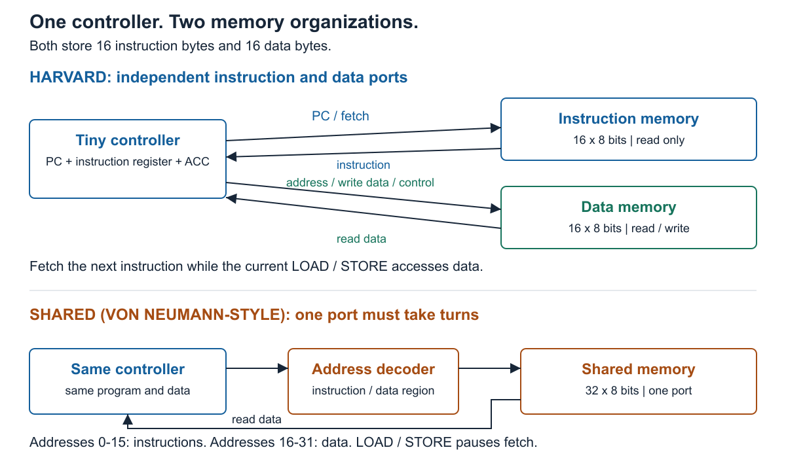
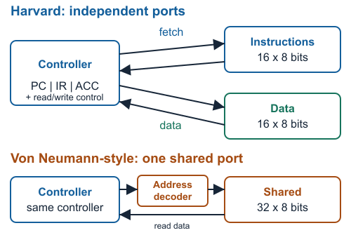
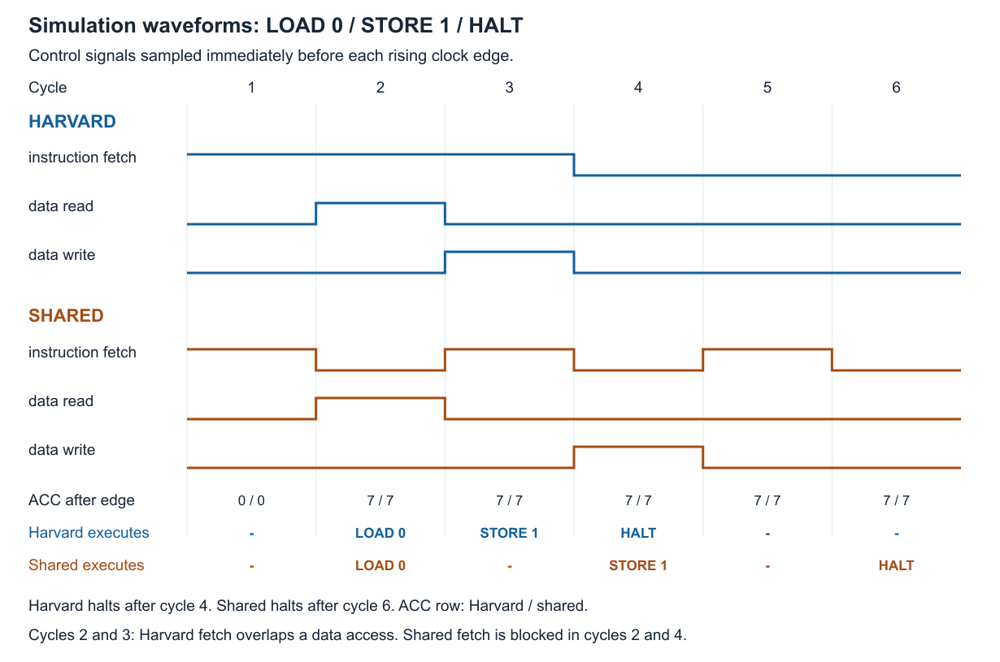

Instruction & Data Memory Hierarchy
Three Verilog memory designs run the same byte-copy program. Harvard takes four cycles, shared single-port memory takes six, and the cached hierarchy takes six with two cache misses.
Team Architec
MCA Project 9, Section A • Newton School of Technology, Rishihood University
memory_system.v), IEEE report authoring, GitHub repository management, and GitHub Pages deployment.
program_counter.v), Instruction Memory (instruction_memory.v), instruction prefetch logic, and fetch assertions.
data_memory.v), Read/Write Control (read_write_control.v), synchronous write committing, and reset data retention.
shared_memory.v), Address Decoder (address_decoder.v), 0-15 / 16-31 address translation, and port contention stall logic.
tb_memory_compare.v), 6 verification test scenarios, waveform generation (make_figures.py), and cycle-accurate CSV sampling.
Architectural Comparison
How dual physical buses eliminate the single-port structural bottleneck

- ✓ Dedicated Buses: 16-byte instruction memory and 16-byte data memory operate on physically separated address and data buses.
- ✓ Zero Port Conflicts: While executing
LOAD 0orSTORE 1on the data bus, the controller simultaneously fetches the next instruction on the instruction bus. - ✓ Throughput: Completes the 3-instruction workload in 4 clock cycles.

- ⚠ Single Physical Port: Unified 32-byte memory must serve both instruction fetches and data read/writes through one port.
- ⚠ Address Decoding: Instructions mapped to physical addresses 0–15; Data mapped to addresses 16–31.
- ⚠ Priority & Stalls: Data access is given priority over instruction fetch. Fetch is blocked, PC holds, and execution is delayed by 2 stall cycles (completes in 6 cycles).
Interactive Cycle Stepper
Walk step-by-step through the 6 simulation clock cycles of LOAD 0; STORE 1; HALT
LOAD 0 from instruction memory. Pipeline is filling.
LOAD 0 from shared memory physical address 0. Single port is free.
Sampled Waveforms
Pre-rising edge sampled control signals comparing concurrent vs serialized operations

Waveform Observations:
- Cycle 2: In Harvard mode,
h_fetch=1andh_read=1are both high simultaneously. In shared mode,s_fetch=0because data read claims the port. - Cycle 3: In Harvard mode,
h_fetch=1(fetching HALT) andh_write=1(writing data 7) occur together. In shared mode,s_write=0while it fetches the delayed instruction. - Cycle 4: Harvard asserts
halted. Shared memory only now executes STORE, blocking fetch again.
Project Guide & Viva Preparation
Comprehensive technical concepts, ISA specifications, and examination questions
1. Instruction Set Architecture (8-bit ISA)
Each instruction word is 8 bits wide: upper nibble [7:4] represents the opcode, and lower nibble [3:0] specifies the 4-bit data memory address operand.
| Opcode | Mnemonic | Hex Encoding | Micro-Operation | Description |
|---|---|---|---|---|
0x1 |
LOAD addr | 1a |
ACC <= data_mem[a] |
Reads byte at data memory address a into the accumulator. |
0x2 |
STORE addr | 2a |
data_mem[a] <= ACC |
Writes byte in accumulator into data memory address a. |
0xF |
HALT | Fa |
halted <= 1'b1 |
Stops processor execution; suppresses all further memory requests. |
0x0 |
NOP | 0a |
None | No operation; advances PC without memory data traffic. |
| Other | FAULT | — | fault <= 1'b1 |
Invalid opcode trap; stops execution and asserts fault indicator. |
2. RTL Module Breakdown & Hierarchy
| Verilog Module | Source File | Owner | Architectural Role |
|---|---|---|---|
program_counter |
rtl/program_counter.v |
Pranjal Modi | 4-bit instruction pointer. Advances on accepted fetch; holds during port stalls. |
instruction_memory |
rtl/instruction_memory.v |
Pranjal Modi | 16 × 8-bit instruction storage. Initialized with demo.hex. |
data_memory |
rtl/data_memory.v |
Sarvjeet Yadav | 16 × 8-bit data RAM. Combinational reads, synchronous rising-edge writes. |
read_write_control |
rtl/read_write_control.v |
Sarvjeet Yadav | Decodes opcodes into control flags (is_load, is_store, is_halt, is_nop). |
shared_memory |
rtl/shared_memory.v |
Abhishek Tripathi | Unified 32 × 8-bit RAM accessed through a single bidirectional port. |
address_decoder |
rtl/address_decoder.v |
Abhishek Tripathi | Maps 0–15 to instructions, 16–31 to data. Arbitrates priority to data accesses. |
simple_controller |
rtl/simple_controller.v |
Suryansh Singh | Houses ACC, instruction register, valid bit, and top-level control logic. |
memory_system |
rtl/memory_system.v |
Suryansh Singh | Top-level parameterizable wrapper (SHARED_BUS=0/1) for testing. |
3. Viva & Examination Defense Q&A
LOAD 0 reads data) and Cycle 3 (when STORE 1 writes data), the controller can simultaneously fetch the next instruction across the independent instruction bus. In contrast, shared memory possesses only a single physical port. Because data operations are given priority, the instruction fetch is stalled for 1 cycle during each data operation, introducing 2 structural stall cycles.
execute_valid bit in the controller?
▾
execute_valid flag is cleared to 0 when no valid instruction was fetched, creating an intentional pipeline "bubble" (no-op).
address_decoder module. The unified 32-byte address space is partitioned into two regions: addresses 0–15 store instructions (direct mapping of 4-bit PC), while addresses 16–31 store data (data address $+ 16$). Priority arbitration ensures that if data_read_enable or data_write_enable is asserted, the data physical address takes ownership of the memory port and the instruction fetch is blocked.
data_write_enable is active, preventing race conditions and glitch writes.
NOP instructions and HALT), both Harvard and Shared architectures execute in exactly 4 cycles because no data access ever competes for the shared port.
Verification Scenarios
Automated testbench (tb_memory_compare.v) running 6 comprehensive verification scenarios
Scenario 0: Core Demonstration
Program: LOAD 0; STORE 1; HALT
Confirms 4 cycles in Harvard vs 6 cycles in Shared memory. Verifies identical final result data[1] = 7.
Scenario 1: Boundary & Hazards
Max address 15 & back-to-back STORE/LOAD
Validates address decoding at extreme boundaries and verifies that read immediately following write accesses updated data.
Scenario 2: Compute Only (NOPs)
Program: NOP; NOP; HALT
Executes in 4 cycles for BOTH architectures. Proves Harvard speedup is workload-dependent and requires data bus traffic.
Scenario 3: Immediate HALT
Program: HALT
Both halt cleanly in 2 cycles. Verifies that memory traffic immediately terminates and no spurious requests are emitted.
Scenario 4: Invalid Opcode Trap
Program with unknown opcode
Processor halts immediately on unrecognized opcodes, asserting the fault output flag to protect architectural state.
Scenario 5: Reset & Retention
Synchronous reset during copy sequence
Asserting reset clears PC and ACC, but verified data stored in RAM remains uncorrupted across the reset cycle.
Video Presentation Timeline
Target: 3 min 30 sec (Max 5 min) • All 5 members present
program_counter.v), and instruction prefetching.make demo, waveform inspection (waveforms.png), and 4 vs 6 cycle proof.make test), final technical report, and GitHub repository review.